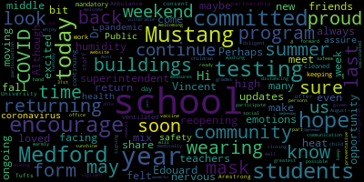

[Edouard-Vincent]: Hi, Mustang community. This is your proud superintendent, Dr. Edward Vincent. I am here today to share a few updates about the reopening of schools. Although it sure has felt like summer this week, with the heat and humidity we have been facing, fall is soon to come and it is back to school time. I am sure all of you have a mix of emotions as we return to our schools. I have always loved back to school time, an opportunity to meet your teachers and make new friends. Perhaps you're even moving on up to middle school or maybe high school this year. As excited as you may be, I know that many of you are a bit nervous about returning to school during this ongoing coronavirus pandemic. I would like to assure you today that Medford Public Schools is committed to your safety and your health in all of our buildings. As you may know, mask wearing is mandatory for all students and staff, and we are committed to keeping our buildings cleaned and ventilated each day. We are proud of the work that we did last year with in-school COVID testing, and we are committed to continuing this partnership with Tufts University and Armstrong Ambulance to offer the same program again this year. I encourage you to look out for the testing consent form in today's communication, as well as on our website. We are aiming for 100% testing participation from our students this year. And by signing and returning the form to your school's office, your child will be ready to participate in the program. We also encourage our Medford community to continue to be vigilant with COVID-19 preventative measures, such as wearing masks, social distancing, and diligent hand-washing. It is my greatest hope that all who are able get vaccinated as soon as possible. The vaccine has given us hope and we must continue to do our part to keep all children and our medically vulnerable persons very safe. In closing, I encourage all of you to enjoy the sunshine this last weekend of summer for us here in Medford. I look forward to warmly welcoming all our students in grades one through 12 this Tuesday, August 31st, and to also welcome our newest Mustangs, our kindergartners, on Wednesday, September 8th. I can't wait to see you, and I hope that all of you have a wonderful weekend. Go Mustangs!
|
total time: 3.19 minutes total words: 406  |
|||
{kind=link}